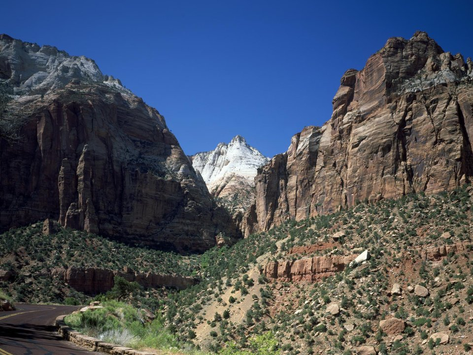

Springdale · At the entrance
Cable Mountain Lodge
Suites steps from the park gate.
Official details for Cable Mountain LodgeRed cliffs and a river canyon.
Zion Canyon’s sandstone walls rise 2,000 feet above the Virgin River, and the little town of Springdale sits right at the park gate. Land at St. George Regional, drive an hour east, stay at Cable Mountain Lodge steps from the entrance, ride the park shuttle up the canyon, wade the Narrows or walk to Emerald Pools, and watch the cliffs glow at sunset.

Time illustration: direct distance at 150 KTAS plus 15 minutes for departure and arrival, matching the discovery page. Use ForeFlight for your actual flight plan.
KSGU, St. George Regional, is a non-towered airport at 2,884 feet with a 9,300-foot runway, about an hour from Springdale.
St. George Regional Airport, St. George, UT
Other FBOs: Sandstone Aviation (435-674-1000) and Above View Jet Center (435-688-2111). Hot summer afternoons and gusty winds. General Dick Stout Field in Hurricane (1L8), closer to the park, has a 3,282-foot runway. No live fuel price is shown.
Utah canyon-country flying: high elevations and density altitude, gusty afternoon winds, summer monsoon storms from July to September, smoke in fire season, and long distances between airports. About 1700 nm from Myrtle Beach: two long days each way with several fuel stops. Plan a week, or overnight on the way out and back.
Rates and availability need travel dates. Book months ahead for spring and fall.
Suites steps from the park gate.
Official details for Cable Mountain LodgeThe only lodging inside Zion Canyon.
Official details for Zion LodgeA red-rock spa resort beside Snow Canyon State Park, about 25 minutes from the airport, with guided hikes and the Sagestone Spa & Salon.
Greater Zion for Red Mountain ResortPrices and availability for your dates, through our partner Stay22. This is an affiliate link: we may earn a commission at no cost to you. The picks above are never paid.
Reserve weekend dinners.
A Springdale favorite with a garden patio.
Official details for Bit & SpurBig breakfasts and burgers.
Official details for Oscar’s CafeRestaurants in Springdale and St. George.
Greater Zion for More restaurantsAngels Landing requires a permit; check river conditions before the Narrows.
This prototype links to the local visitor site. It does not yet match events to your travel dates.
Mild temperatures and flowing water.
NPS for SpringCottonwoods turn gold in the canyon.
NPS for FallHike early; storms bring flash floods.
NPS for Summer heatCheck the local calendar when choosing a weekend, and confirm dates and tickets with the organizer.
A sample Zion weekend. This is a two-day flight each way; plan a week. No bookings or availability confirmed.
Land at KSGU early.
Drive to Springdale and ride the canyon shuttle.
Emerald Pools, then back to the airport.
Land at KSGU, subject to weather, density altitude and your actual flight plan.
Drive to Springdale and the visitor center.
Dinner at Bit & Spur.
The shuttle to the Narrows, early.
Emerald Pools.
Sunset on the cliffs.
Breakfast at Oscar’s, then back to St. George.
Compute takeoff performance for the morning temperature and allow time at the FBO.
Desert afternoons are hot and gusty; leave in the morning.
The Narrows.
The Riverside Walk.
Dinner at Bit & Spur.
These details make the difference between an appealing list and a usable getaway.
Lodging, then permits for Angels Landing.
About 1,700 nm: two long days each way.
Check the forecast before canyon hikes.
March to May and September to November.
Picks and links reviewed by WingAway Weekends. Hours, prices, menus and availability change often, so confirm directly with each place before booking. Spotted something out of date, or have a favorite we missed? Email us at hello@wingawayweekends.com.
WingAway Weekends helps you discover the destination. Use ForeFlight and current official aviation information for route, performance, weather, NOTAMs and preflight decisions. Flight planning and PIC responsibility stay with the pilot.
One fly-in weekend, a Fly to Lunch pick and the newest guides, about once a month.
Free. Unsubscribe anytime.